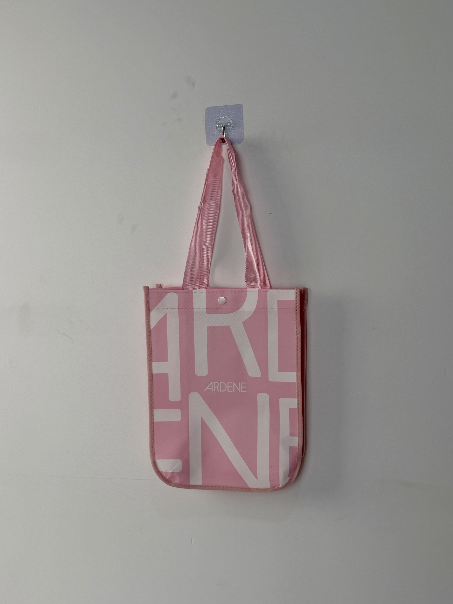

A bold pink non-woven shopping tote designed for ARDENE, featuring oversized typographic branding and a snap-button closure that merges Gen-Z aesthetic sensibility with everyday retail functionality.

ARDENE is one of Canada's leading fast-fashion retailers, operating over 300 stores across North America and a robust e-commerce platform serving Gen-Z and young millennial shoppers. Known for affordable on-trend accessories, footwear, jewelry, and apparel, the brand positions itself at the intersection of accessibility and self-expression — a positioning that demands packaging equally capable of making a statement.
The bag needed to feel like a piece of the collection itself — something customers would carry on its own merit, not just because it came with a purchase.
With a primary audience of style-conscious shoppers aged 16 to 28, ARDENE required a carry solution that functioned simultaneously as transactional packaging, social-media-friendly content, and a reusable everyday accessory. The design mandate was clear: maximum brand visibility without compromising wearability.
The creative direction embraced the logomania trend that has cyclically dominated youth fashion — but executed with graphic restraint. Rather than scattering small logos across the surface, the design deploys a single monumental "ARDENE" wordmark cropped at the bag's edges, creating an immersive brand field that reads as pattern rather than advertisement.
Oversized letterforms create visual impact at distance while reading as abstract pattern up close.
Color-matched to ARDENE's seasonal campaign Pantone for consistency across retail touchpoints.
Functional hardware prevents contents spillage while adding a tactile premium cue absent in basic totes.
Edge-to-edge gravure printing ensures the typographic pattern remains uninterrupted at panel boundaries.
The bag was engineered for high-frequency retail use in mall environments, where shoppers often carry multiple store bags simultaneously. Material selection balanced lightweight comfort against the structural integrity needed for accessory and footwear purchases.
| Parameter | Specification | Test Standard |
|---|---|---|
| Load Capacity | 6 kg | ASTM D5265 |
| Handle Pull Strength | > 30 N/cm | ASTM D5034 |
| Color Fastness | Grade 4-5 | ISO 105-B02 |
| Print Abrasion | > 300 cycles | ASTM D5264 |
Fast-fashion retail operates on compressed seasonal calendars, requiring production partners capable of rapid turnaround without sacrificing color consistency. This order followed a streamlined five-stage workflow from artwork approval to final QC.
Pantone 1895 C confirmed via physical lab-dip swatch. Digital proof approved by ARDENE's Toronto merchandising team within 48 hours.
Two-pass gravure printing: white under-base layer followed by CMYK typographic artwork. Inline tension control prevents registration drift on colored substrate.
Automated die-cutting with ultrasonic edge sealing. Bottom gusset pre-folded and heat-creased for consistent box-bottom geometry.
Double-needle lockstitch at 8 SPI for handles. Snap-button manually positioned and pneumatically pressed with torque-calibrated dies.
General Level II AQL 2.5 for print defects, seam integrity, and button function. Flat-packed in double-wall export cartons.
The tote was introduced as a seasonal gift-with-purchase item across ARDENE's back-to-school and holiday campaigns, distributed through both brick-and-mortar stores and online order fulfillment. The bag's social-media appeal generated measurable organic reach beyond the initial promotional window.
Key Insight: The oversized typography proved highly effective in user-generated content — the bag was frequently tagged in unboxing videos and shopping haul posts where the brand name remained legible even in thumbnail-sized frames.
Beyond the promotional campaign, the tote transitioned into ARDENE's paid reusable bag program at select locations. Its durability and aesthetic appeal justified a $2.50 retail price point, transforming a marketing expense into a revenue stream while continuing to generate brand impressions throughout its extended lifecycle.
Three design decisions distinguish this tote from conventional retail carry bags. Each addresses a specific behavioral pattern observed in ARDENE's core demographic.
By treating the brand name as all-over pattern rather than discrete logo placement, the design avoids the promotional aesthetic that typically triggers disposal behavior. Customers perceive the bag as a fashion accessory first.
ARDENE's signature pink occupies a unique position in Gen-Z color psychology — it reads as expressive rather than gendered. This expanded the bag's appeal beyond traditional demographic assumptions.
Adding a functional closure transforms the bag from a simple carry-all into a secure daily accessory. Post-purchase surveys indicated the snap button was the most frequently cited reason for continued reuse.
We specialize in fast-fashion packaging with quick turnaround, trend-responsive design, and consistent color matching across seasonal campaigns.